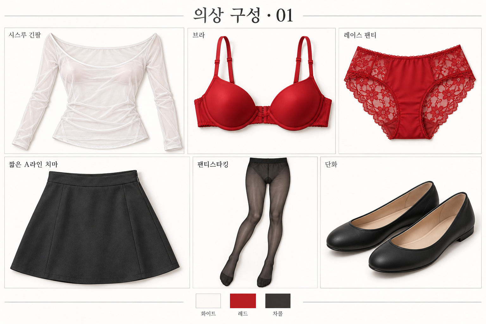
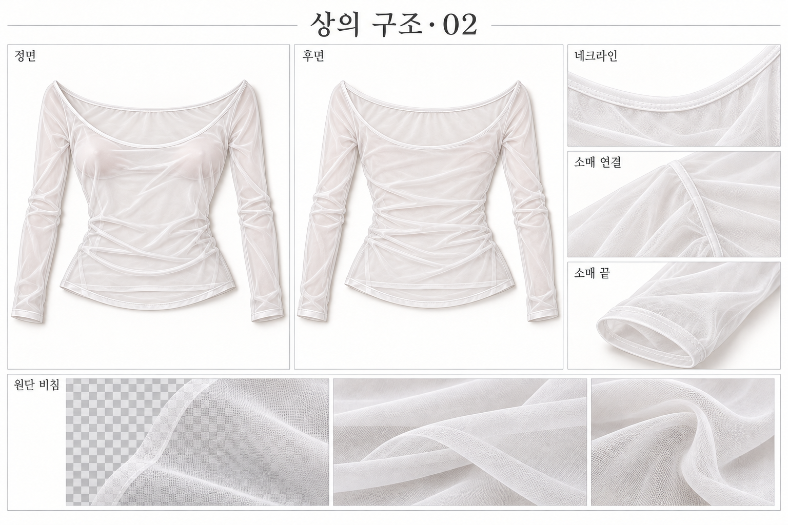
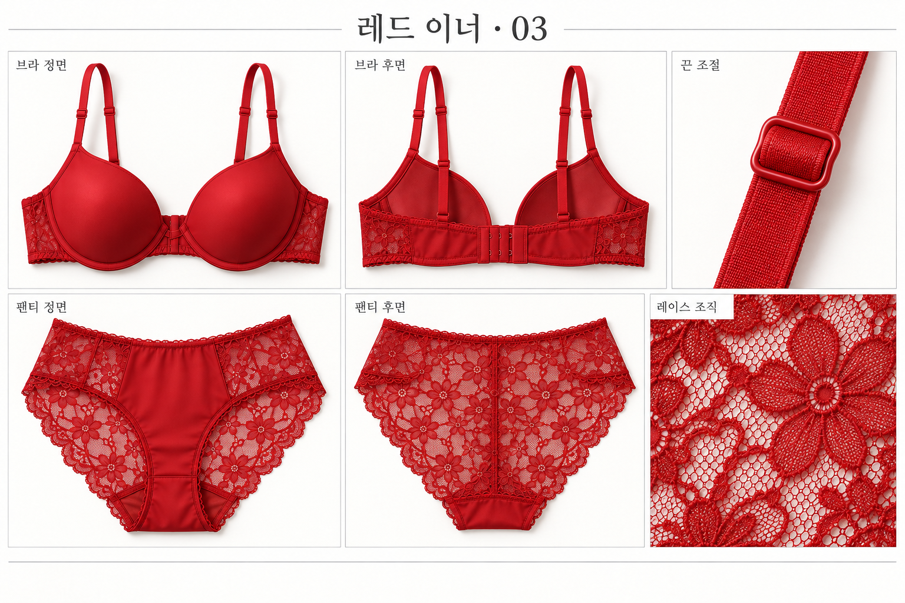
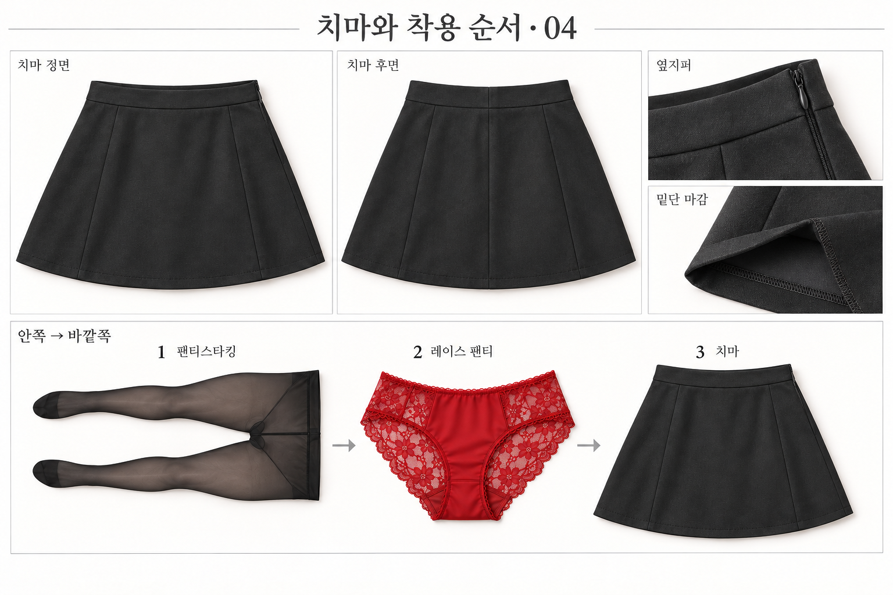
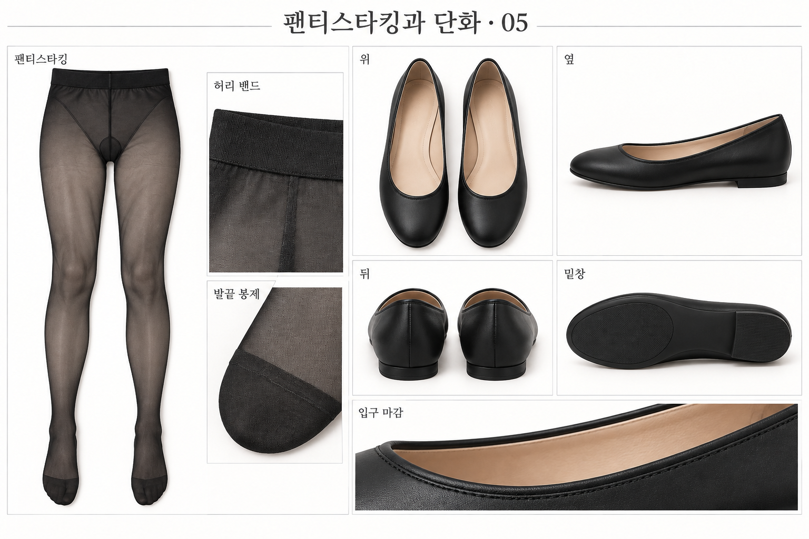
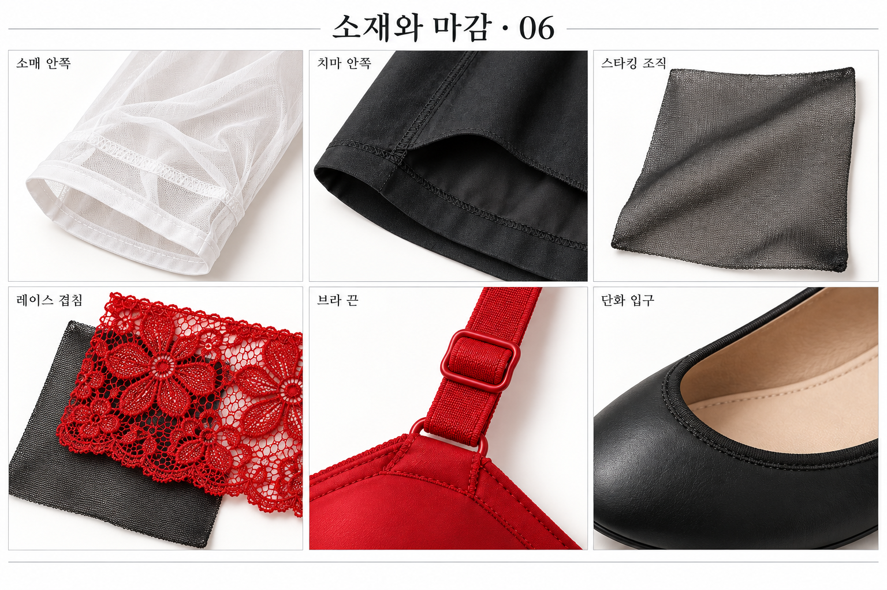

화이트 × 레드 · 의상 시트
6장의 의상·소재 참고 자료입니다. 이미지를 누르면 원본 크기로 열립니다.


의상 6종과 화이트·레드·차콜 배색


네크라인, 소매 연결, 손목 마감과 원단 비침


앞·뒤 형태, 끈 조절, 레이스 조직


안쪽부터 팬티스타킹 → 레이스 팬티 → 치마


허리 밴드, 발끝 봉제, 신발 4면과 입구


가까이 보이는 원단, 안쪽 봉제와 경계